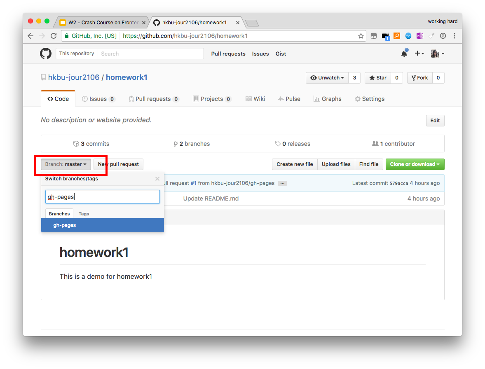
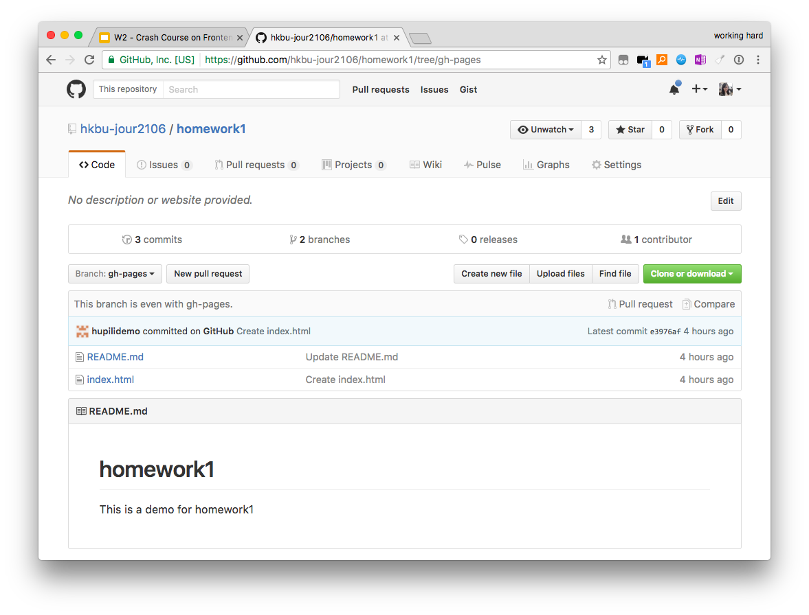
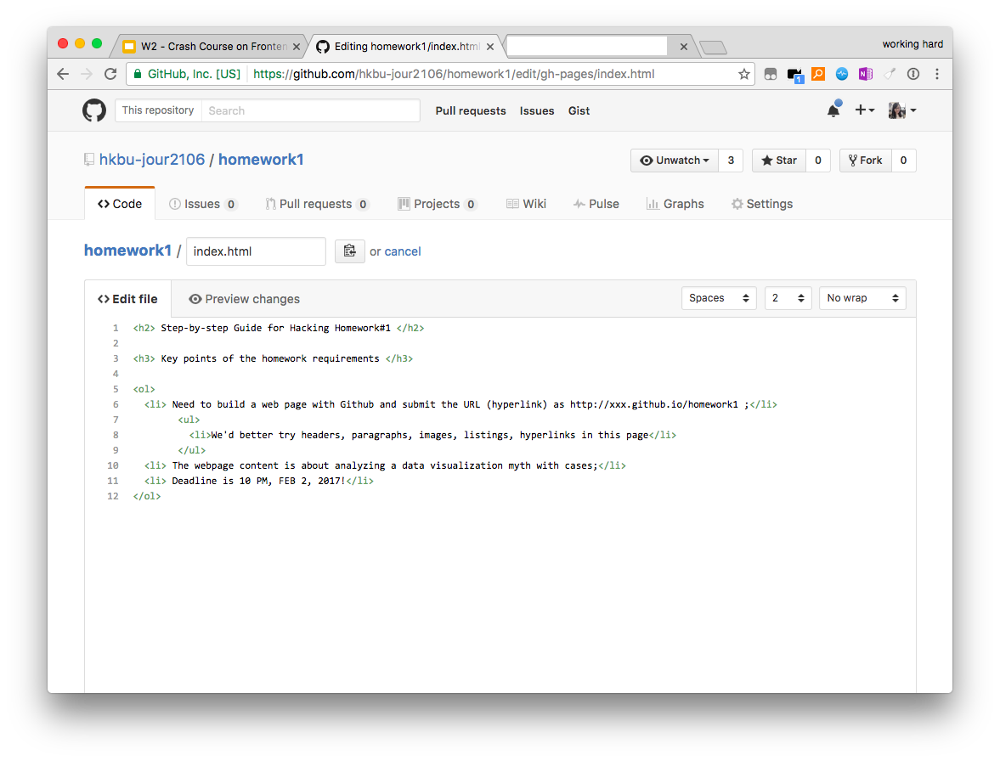
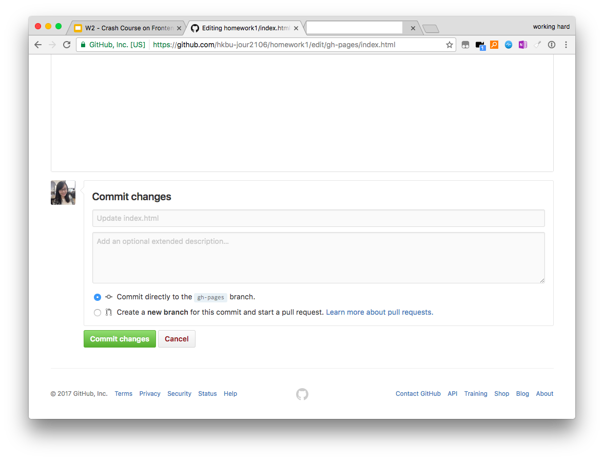
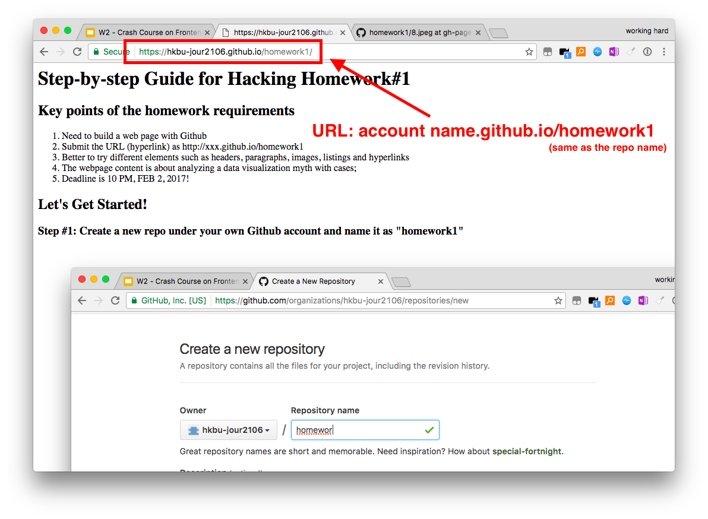

Create a new repo under your own Github account and name it as "homework1"

Go to repo "homework 1", click "Branch" button, type in "gh-pages" and create this branch.
First make sure you are sure you are now in branch "gh-pages". After that, create a "index.html" file and a "README.md" file.
"index.html" is the place where you store the codes building the webpage.
"README.md" is the file providing basic information and/or instructions to people who visit this repo.
Open "index.html", and it's time to code!
Since this home work is about analyzing data visualization myths, you may need to include images and hyperlinks for better reference.
You can always check Week 2's slides for help if you are not familiar with adding image or hyperlink with HTML.
If you would like to commit the changes to save your HTML file, please make sure you are directly committing to "gh-pages" branch.
After finish the coding part, you can find your webpage from "accountname.github.io/homework1".
